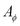
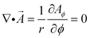
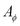
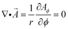
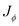
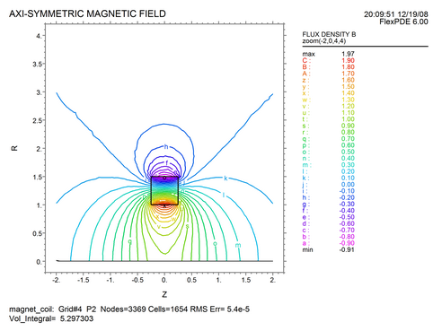
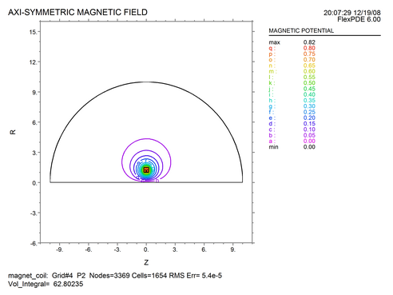
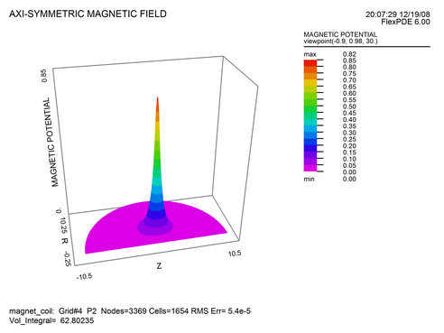

|
A Magnet Coil in 2D Cylindrical Coordinates |

  
|
|
A Magnet Coil in 2D Cylindrical Coordinates |
|
As a first example, we will calculate the magnetic field created by a coil, using 2D cylindrical (r,z) geometry. We will apply current only in the azimuthal direction, so the only nonzero component of  will be the azimuthal component. With only a single component normal to the computational plane, the gauge condition is automatically satisfied, since 
will be the azimuthal component. With only a single component normal to the computational plane, the gauge condition is automatically satisfied, since 
In the descriptor which follows, note that we have chosen to align the cylindrical axis with the horizontal plot axis. FlexPDE uses a right-hand coordinate system, so in this case positive  is outward from the plot page.
See also "Samples | Applications | Magnetism | Magnet_Coil.pde"
Descriptor 2.1: Magnet_Coil.pde
Title 'AXI-SYMMETRIC MAGNETIC FIELD'
Coordinates
xcylinder(Z,R)
Variables
Aphi { azimuthal component of the vector potential }
Definitions
mu = 1 { the permeability }
J = 0 { global source term defaults to zero }
current = 10 { the source value in the coil }
Br = -dz(Aphi) { definitions for plots }
Bz = dr(r*Aphi)/r
Equations
Curl(curl(Aphi)/mu) = J
Boundaries
Region 1
start(-10,0)
value(Aphi) = 0 { specify A=0 along axis }
line to (10,0)
value(Aphi) = 0 { H x n = 0 on distant sphere }
arc(center=0,0) angle 180 to close
Region 2
J = current { redefine source value }
start (-0.25,1)
line to (0.25,1) to (0.25,1.5)
to (-0.25,1.5) to close
Monitors
contour(Bz) zoom(-2,0,4,4) as 'FLUX DENSITY B'
contour(Aphi) as 'Potential'
Plots
grid(z,r)
contour(Bz) as 'FLUX DENSITY B'
contour(Bz) zoom(-2,0,4,4) as 'FLUX DENSITY B'
elevation(Aphi, dr(Aphi), Aphi/r, Bz)
from (0,0) to (0,1) as 'Near Axis'
vector(Bz,Br) as 'FLUX DENSITY B'
vector(Bz,Br) zoom(-2,0,4,4) as 'FLUX DENSITY B'
contour(Aphi) as 'MAGNETIC POTENTIAL'
contour(Aphi) zoom(-2,0,4,4) as 'MAGNETIC POTENTIAL'
surface(Aphi) as 'MAGNETIC POTENTIAL'
viewpoint (-1,1,30)
End


